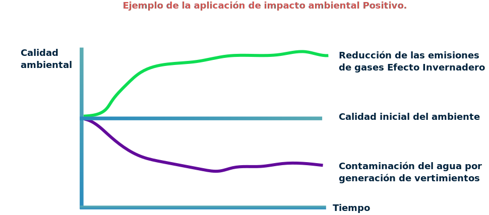

1. Contexto normativo y beneficios ambientales asociados a la implementación de la economía circular.
En esta unidad se abordará el contexto normativo de la economía circular, con los beneficios ambientales e incentivos asociados a las acciones de implementación de la economía circular. Así mismo, se detalla las líneas de acción y el impacto ambiental positivo que se logra con la disminución del uso de recursos.
1.1 Marco normativo sobre economía circular.
Contexto colombiano
Fuente: elaboración propia
Contexto colombiano
Fuente: elaboración propia
Frentes de acción de la Estrategia de Economía Circular
La Estrategia Nacional de Economía Circular (ENEC) ha sido construida con la colaboración de diferentes actores nacionales e internacionales a partir de las tendencias globales en Economía Circular, las metas de los Objetivos de Desarrollo Sostenible y diferentes políticas nacionales de desarrollo productivo, crecimiento sostenible y gestión integral de residuos, teniendo en cuenta las necesidades de las partes interesadas de acuerdo con el siguiente esquema:
Fuente: elaboración propia
Normatividad nacional
A continuación podrá ver los diferentes mecanismos normativos que fueron referente para la construcción de la Estrategia Nacional de Economía Circular (ENEC).
1.2 Incentivos normativos para la implementación de proyectos de economía circular.
Estudio de caso 1.
Don Carlos es un importador de tecnología, producto de su relacionamiento con el sector, abre una nueva línea de negocios, la cual consiste en comercializar paneles solares.
En el proceso de importación don Carlos es sorprendido por los costos finales del proceso, pues se dio cuenta de que este tipo de tecnología cuenta con beneficios tributarios del Gobierno todo esto basado en la Ley 1715 de 2014; que promueve el uso de energías renovables y el cual busca fomentar el uso de este tipo de tecnologías en el país.
Incentivos para la generación de energías no convencionales, como fomento a la investigación, desarrollo e inversión en el ámbito de la producción y utilización de energía a partir de Fuentes No Convencionales de Energía (FNCE), la gestión eficiente de la energía, los obligados a declarar renta que realicen directamente inversiones en este sentido, tendrán derecho a reducir anualmente de su renta, por los 5 años siguientes al año gravable en que hayan realizado la inversión, el cincuenta por ciento (50%) del valor total de la inversión realizada. Ley 1715 de 2014. Artículo 11.
Estudio de caso 2.
Doña Julia es una microempresaria que se dedica a la transformación y elaboración de productos lácteos, para lo cual cuenta con una gran cantidad de bovinos y caprinos, estos le permiten tener una producción de 500 litros de leche al mes. Producto de su actividad, se generan 2 toneladas/mes de materia orgánica de sus animales. Para lograr una gestión integral de sus residuos, Julia implementa un biodigestor que tiene la capacidad de transformar la materia orgánica en subproductos como gas metano y abono. Con el gas, se produce energía que sirve de sustento para su propia finca y 3 fincas aledañas y el abono se comercializa con productores locales. Con esta actividad, Julia logra una reducción en el impuesto de IVA de los equipos que importa para la producción de biogás y la generación de energía eléctrica. A esto se suma, la reducción en tarifa de energía y del servicio de gas domiciliario además, del ingreso adicional por la venta de abono.
“Ley 1715 de 2014. Artículo 12. Instrumentos para la promoción de las FNCE. Incentivo tributario IVA. Para fomentar el uso de la energía procedente de FNCE, los equipos, elementos, maquinaria y servicios nacionales o importados que se destinen a la preinversión e inversión, para la producción y utilización de energía partir de las fuentes no convencionales, así como para la medición y evaluación de los potenciales recursos estarán excluidos de IVA. Para tal efecto, la autoridad ambiental certifica los equipos y servicios excluidos del gravamen, con base en una lista expedida por la Unidad de Planeación Minero Energética (UPME)”.
1.3 Líneas de acción de la economía circular.
Con la firma del Plan Nacional de Desarrollo 2018 – 2022, se introduce la Estrategia Nacional de Economía Circular (ENEC), la cual busca fortalecer el modelo de desarrollo económico, social y ambiental del país. Dicha estrategia impulsa la productividad, la innovación tecnológica, el cierre de ciclo de materiales, la colaboración y nuevos modelos de negocio a través de la implementación de modelos sistémicos y holísticos, los cuales se basan principalmente en el desarrollo de mecanismos de gestión en seis líneas de acción descritas a continuación:
Flujo de materiales industriales y productos de consumo masivo:
Esta línea de acción se enfoca en los flujos de materiales utilizados por los procesos industriales, asegurando la responsabilidad extendida al productor para garantizar la gestión de materiales a lo largo del ciclo de vida pasando por la fabricación, puesta en el mercado y disposición final del producto como residuo en la etapa de posconsumo.
Actualmente el país cuenta con leyes que obligan al productor a generar gestión de sus materiales a lo largo del ciclo de vida y estas aplican por ahora para:
Flujo de materiales de envases y empaques:
Los empaques y envases son elementos claves a tener en cuenta, pues su rol principal se enfoca a la protección, transporte, comunicación, comercialización y seguridad de los productos o servicios de las actividades económicas. Sin embargo, representan un grave problema ambiental pues su uso es muy corto y su biodegradación es muy prolongada, llegando inclusive a tardar cientos de años.
Industrias como alimentos (38%), bebidas (18%), farmacéuticos (5%) y cosméticos (3%) son los principales sectores que demandan este tipo de materiales. Estas industrias consumen los siguientes recursos para sus envase y empaque:
Actualmente menos del 10% de los residuos de empaques y envases son aprovechados de alguna forma, lo cual constituye un serio problema a nivel social y ambiental, a la vez que presentan grandes oportunidades para la economía circular, pues a través de diferentes herramientas se busca la reducción, optimización y aprovechamiento sostenible. Las técnicas son:

El eco-diseño: principalmente implementado para aumentar la eficiencia en el uso materiales.
La simbiosis industrial: busca lograr intercambio de materiales para que se mantengan a lo largo de la cadena de valor.
La armonización normativa: busca incentivar el aprovechamiento y el cierre de ciclos.
Instrumentos económicos: implementa sistemas de depósito-reembolso o tasas por uso.
Articulación del sistema de servicio público de aseo con la responsabilidad extendida del productor: busca fomentar el aprovechamiento de los residuos por los gestores y productores.
Flujos de Biomasa.
La materia orgánica es considerada como uno de los residuos con mayor proyección de aprovechamiento. Su potencial puede ser aprovechado en diferentes aplicaciones en las industrias de papel, cosméticos y plásticos. Además de ser restaurador de suelos y utilizado en la producción energética. La biomasa residual comprende:
Sin embargo, su deficiente gestión ocasiona actualmente más del 50% de las emisiones de gases efecto invernadero que produce el país, de ese 50%, el (17%) proviene de tala de tierras forestales, (14%) de fertilización de pastizales, (9%) de emisiones de metano por actividades ganaderas, (8%) del uso agroquímicos en tierras de cultivo y un (8%) de otras actividades.
En ese sentido la economía circular encuentra oportunidades con este tipo de residuos, a través de su implementación, se puede lograr la fabricación de orgánicos y acondicionadores de suelos o la generación de bioenergía.
Las actividades económicas anteriormente mencionadas se traducirían en numerosos beneficios que no solo mejoran la economía nacional y local, sino también tienen potencial para recuperación de suelos degradados.
Fuentes y flujos de energía.
El sistema de producción de energía eléctrica colombiano está soportado principalmente por las hidroeléctricas, que tienen la capacidad de producir más del 70% de la energía generada en el país, seguido por el 27% de las termoeléctricas y el 3% restante por otras fuentes de generación (MADS, 2019). Por su parte, su uso genera más del 30% de las emisiones de Gases Efecto Invernadero (GEI) del País, pues la quema de combustibles fósiles aporta a la atmósfera cantidades significativas de dióxido de carbono (CO2) y otros contaminantes atmosféricos como dióxido de nitrógeno (NO2) y dióxido de azufre (SO2). Los sectores con mayor demanda de energía son:
En este sector productivo, la economía circular encuentra una gran oportunidad pues busca aumentar el valor agregado por unidad de energía utilizada y disminuir las emisiones de gases efecto invernadero, todo esto mediante cambios en los procesos tecnológicos para aumentar su eficiencia tales como la conversión tecnológica, el aprovechamiento de residuos como biomasa, la implementación de programas de ahorro y uso eficiente de la energía y el uso de fuentes renovables no convencionales.
Flujos de Agua
El país cuenta con una gran oferta hídrica que ronda los 1,214,258 millones de m3/año, haciendo que el país pueda dotar a toda su población con la cantidad suficiente para asegurar su bienestar y supervivencia. Sin embargo, según datos del DANE en 2018, más del 35% de la población vive en zonas de estrés hídrico moderado o alto, esto ocasionado principalmente por disminución de la oferta natural, el crecimiento poblacional, la variabilidad climática o la insuficiencia de infraestructura de distribución (IDEAM, 2018). De acuerdo al último Estudio Nacional del Agua, se advierte que cerca de 391 municipios se encuentran en riesgo de escasez. Las principales fuentes de agua del país son:
estrategias de economía circular
Desde este punto de vista la economía circular encuentra grandes oportunidades, pues busca optimizar el uso eficiente del recurso, mejorar su infraestructura de distribución y eliminar su contaminación mediante la aplicación de técnicas como:
Aprovechamiento y reuso de las aguas residuales tratadas.
Aprovechamiento de contaminantes presentes en el agua para los procesos de la industria.
Disminución de los vertimientos puntuales.
Ahorro y uso eficiente del agua.
Protección y mantenimiento de fuentes de agua.
Implementación de incentivos legales y financieros para su protección.
Flujos de materiales de construcción.
La construcción es un sector económico que aporta significativamente al producto Interno Bruto (PIB) Nacional, sin embargo su dinámica económica genera altas cantidades de contaminación y consume grandes volúmenes de recursos naturales. El sector de la construcción usa el 60% de los recursos naturales no renovables extraídos de la tierra y el 40% de la energía del país, emite el 30% de las emisiones de CO2 y genera más del 20% de los residuos (UPME, 2018). Sumado a lo anterior, este sector genera más de 22 millones de residuos de construcción y demolición (RCD), de los cuales más del 30% de ellos es dispuesto de manera ilegal en cuerpos de agua y suelos.
Actualmente solo el 2% de los residuos generados es aprovechado, lo que se convierte en un grave problema ambiental. Las estrategias de economía circular buscan mejorar este panorama y proponen las siguientes actividades:
La transición hacia una economía circular requiere intervenir todo el ciclo de vida de un producto, desde la producción hasta la creación de mercados para materias primas secundarias. Esto incluye mejorar la gestión de residuos desde la prevención, el reuso, el reciclaje y la revalorización como prioridades para fortalecer la política pública y los incentivos.
Por lo anterior, la Estrategia Nacional de Economía Circular (ENEC) ha priorizado en seis líneas de acción la transformación productiva, el cierre de ciclos de materiales, innovación tecnológica y nuevos modelos de negocio. El siguiente video describe cada una de estas líneas.
1.4 Beneficios de la implementación de la economía circular e impacto ambiental positivo
A continuación, se presenta el estudio de caso “Cerrando el ciclo del plástico de alimentos de un solo uso”.
Su objetivo es demostrar como en la vida real se pueden generar distintas soluciones, que involucran la circularidad de los materiales a partir de la reducción del uso de recursos no renovables, la recirculación y rediseño de los materiales y productos.
El siguiente documento permite visualizar, analizar y comprender los beneficios ambientales y el desarrollo del modelo de negocio.
Anexo. Cerrando el ciclo del plástico de alimentos de un solo uso.
El anterior estudio de caso permite evidenciar el punto central de la economía circular, el cual está direccionado a generar un cambio de paradigma del sistema lineal, en el que se reorientan las acciones en tres direcciones que puedan escalarse de acuerdo con la siguiente figura:
Pasando de visión a realidad
Fuente: Adaptado de Ellen MacArthur Foundation (2019).
Un impacto ambiental se traduce como el cambio a las condiciones ambientales iniciales de un ecosistema o elementos del ambiente, esto principalmente ocasionado por las actividades del ser humano. Un impacto ambiental puede tener dos posibles características:
Diferencias entre impacto ambiental positivo y negativo.
Fuente: (Conesa y Ros, 2010).
La Imagen explica la diferencia entre un impacto ambiental negativo y uno positivo.
Un impacto ambiental negativo se traduce en una desmejora de calidad ambiental, tal y como se observa en la figura 2. Esto se puede ocasionar por la contaminación de los suelos, el agua y el aire, la deforestación, el incremento de gases efecto invernadero, la pérdida de biodiversidad entre otras.
Por su parte, se puede definir como impacto ambiental positivo a todos los impactos generados por un proyecto, obra o actividad que mejoren la calidad inicial del ambiente.
Impactos ambientales positivos
Se espera que por medio de la economía circular, las actividades económicas bajo las seis líneas de acción de la ENEC generen una disminución de los impactos ambientales negativos o el aumento de los impactos ambientales positivos. Esto permitirá mejorar la calidad de vida de las personas y la disponibilidad de recursos naturales para el futuro.
A continuación, se presenta un ejemplo caracterización de impactos.
Ejemplo de la aplicación de impacto ambiental Positivo.
1.5 Disminución del uso de recursos (energía, agua y materias primas).
La disminución en el uso de materias primas y recursos es uno de los pilares de la Economía Circular, la producción más limpia se encarga de estudiar e implementar buenas prácticas de producción, tal como se vió en los modelos de pensamiento de la economía circular.
A continuación, se muestran seis casos de disminución del uso de materiales , agua y energía a partir de la implementación de buenas prácticas en la industria. Estos casos fueron tomados del programa Red de Empresas Sostenibles RedES-CAR (Corporación Autónoma Regional de Cundinamarca, 2019).
Casos de disminución del uso de recursos.
Acaba de culminar la primera unidad temática, del componente formativo 2 del curso, donde ha podido analizar los beneficios ambientales e incentivos normativos que se pueden lograr, cuando se lleva a cabo la aplicación de una iniciativa de economía circular.
2. Generación de propuestas de aplicación de la economía circular
En esta unidad se abordará el concepto de innovación en el marco de la Economía Circular donde se darán a conocer algunos ejemplos de iniciativas y de modelos de negocio que aplican las tipologías de la Economía Circular. Además se proporcionarán algunas técnicas de ideación con ejemplos de aplicación, para que pueda generar una propuesta de aplicación de economía circular en su contexto productivo o social.
Nota de reflexión:
“El mundo está cambiando aceleradamente, ha cambiado nuestra forma de pensar, de ver y de cómo nos relacionamos con él, lo que ha llevado a las empresas a ser más competitivas y por medio de la innovación permitir la transición hacia un nuevo modelo de economía circular”. (Verde, 2018)
2.1 Innovación en la Economía Circular
Innovación en la Economía Circular
Definición de Innovación
La etimología de la palabra innovavión proviene del latín "innovativo" que significa "crear algo nuevo". Por lo tanto, innovación es un cambio que se introduce a un nuevo proceso, producto, servicio o nuevo método de organización o comercialización y se refiere al desarrollo de elementos nuevos o modificar los ya existentes; con el fin de mejorar las prácticas internas de la empresa, los productos, servicios o relaciones externas con los clientes, proveedores, comunidad, entre otras (Garcia, 2017).
Gestión de la Innovación
Joseph Schumpeter en 1937 fue quien introdujo el concepto de innovación, afirmando que es un factor clave para el desarrollo empresarial y el crecimiento económico de los países, y que quienes invierten en investigación e innovación son los que tendrán economías más sólidas, alcanzando mayor riqueza (OCDE, 2005). Debido a que la innovación consiste en generar buenas ideas, convertirlas en mejores procesos, productos o servicios, cuyo éxito se debe ver reflejado en el mercado.
Tipos de Innovación
Ejemplos de Tipos de Innovación

Innovación en Producto o Servicio:
Nuevos productos: el teléfono iPhone o el primer reproductor portátil de MP3.
Nuevos servicios o mejora de los existentes: creación de aplicaciones móviles, juegos, páginas interactivas, acceso a navegadores, mapas y redes sociales.
Fuente: Adaptado de Canal innova (2020).
Innovación de Proceso:
Nuevas tecnologías de fabricación, incremento en el nivel de automatización de los procesos productivos. Pueden ser en dos vías:
Métodos de producción: aumentan la duración del producto por medio de la aplicación de CO2.
Métodos de entrega: el establecimiento de un sistema de información para el seguimiento o monitoreo de mercancías o productos con código QR.
Fuente: Adaptado de Canal innova (2020).
Innovación Organizacional o de Gestión:
La implementación de un sistema de información para la contratación de personal, o para el manejo y administración de archivos.
Innovación de Marketing o de modelos de negocio:
Spotify desarrolló un modelo de negocio premium, donde se puede escuchar un catálogo de música gratis online con publicidad.
Netflix pasó de tener un catálogo de películas por mensualidad, a desarrollar su propio contenido con un modelo de negocio por suscripción.
Clases de Innovación Tecnológica
Innovación Incremental: son pequeños cambios o mejoras que contribuyen a optimizar la eficiencia de un producto o servicio en un proceso productivo. Ejemplo: el teléfono celular.
Innovación Radical: se caracteriza por ser disruptiva en el desarrollo o conceptualización de un producto o servicio, ofreciendo un cambio sustancial o revolucionario a nivel tecnológico. Ejemplo: el primer computador.
Importancia de la Innovación en la Economía Circular
La innovación es un gran aliado de este nuevo concepto que acelera la búsqueda de nuevas soluciones tecnológicas que permitan mejorar los procesos actuales de producción y consumo (Castillo, B.; 2019).
Innovar significa encontrar nuevos o mejorados usos a los recursos de que ya disponemos, la innovación es un poderoso catalizador de la economía circular (Drucker, P.; 1932).
La innovación es un gran compañero de la economía circular y sin duda, la aspiración de alcanzar un sistema circular estimula ideas creativas e innovadoras (Castillo, B.; 2019).
2.2 Tipologías de iniciativas innovadoras y modelos de negocio
2.3 Ejemplos de iniciativas innovadoras en el marco de Economía circular
A continuación, se presentan ejemplos de modelos de negocio de las iniciativas de tipologías innovadoras de economía circular (Gobierno de la República de Colombia, 2019).
Fuente: Estrategia Nacional de Economía Circular (ENEC). Gobierno de la República de Colombia (20219).
2.4 Estrategias de ideación
Método SCAMPER
Técnica creativa utilizada para la generación de ideas a través de la solución de un listado de preguntas; que hacen referencia a unas palabras, cuyas iniciales conforman la palabra SCAMPER. Las ideas se enfocan en:

Sustituir: ¿Qué se puede sustituir? ¿qué pasa si se sustituye el proceso?
Combinar: ¿Qué pasaría si se combinan las características de este producto con otro?
Adaptar: ¿Cómo se puede adaptar el producto/servicio para una nueva necesidad?
Modificar: ¿Qué se puede modificar para organizar mejor?
Poner otros usos: ¿Cómo se puede usar el producto en otros contextos?
Eliminar: ¿Qué se puede eliminar para simplificar el producto/servicio/proyecto?
Reordenar: ¿Qué pasa si cambiamos la estructura del servicio/proyecto?
En esta técnica plantea un producto, servicio o actividad ya existente a la cual se pretende darle vuelta a la idea inicial y mejorarla, abordando el problema desde varias perspectivas nuevas, obligando a las mentes del equipo a trabajar desde una amplia gama de posibilidades y todas diferentes (Eberlee, 1971).
Video. Método SCAMPER.
Fuente: profeceleita_canal
Design thinking
Es una metodología de ideación ampliamente utilizada para procesos innovadores, en donde la persona o grupo que hace el proceso pasa por cinco fases diferentes, descritas a continuación (Doorley et al, 2018).
Empatizar: es la capacidad de identificarse con las necesidades o problemas de la otra persona, en otras palabras, es colocarse sus zapatos para conocer sus problemas y así poder diseñar de forma creativa las posibles soluciones. La empatía se construye a partir del aprendizaje de los valores del usuario de la idea.
Definir: es cuando se revelan los hallazgos encontrados en la etapa de empatía y se convierten en necesidades e ideas con el fin de establecer un desafío donde se entienden las percepciones o puntos de vista de cada uno de los integrantes. En esta etapa se define el problema y la visión hacia el desafío a resolver.
Idear: consiste en interpretar y analizar con detalle las ideas propuestas en la fase previa. En este punto se analiza si lo propuesto es viable para el contexto del proyecto y si es posible hacer un prototipo de dichas ideas. Es un método de convergencia o filtrado de ideas y un método de divergencia para generar nuevas propuestas más sólidas.
Prototipar: es una forma de materializar las ideas y mostrarlas al mundo. Los prototipos en su fase inicial deben utilizar pocos recursos y ser económicos, esto permitirá interactuar más fácil con ellos y probarlos para conocer sus ventajas y desventajas. El aprendizaje de las interacciones con prototipos impulsa una empatía más profunda y da forma a soluciones exitosas.
Testear: en esta etapa se recopilan los comentarios o retroalimentación y se pule la o las soluciones, tratando de entender aún más a los usuarios. En esta etapa iterativa se realiza el prototipo de modelos de baja escala en contextos del usuario definidos, con el fin de entender o visualizar si la solución propuesta está bien o no.
La ventaja de esta metodología es que siempre se puede retomar fases anteriores, bien sea para hacer revisiones que complementen la idea final o para hacer ajustes a las ideas generadas del proceso.
Para complementar la información lo invitamos a consultar el siguiente material complementario:
Lean Startup
La metodología Lean Startup nace como solución para todas las ideas innovadoras que fácilmente no logran surgir como emprendimientos o negocios funcionales. Actualmente, menos del 15% de las ideas generadas llegan realmente a implementarse de manera exitosa, por lo que esta metodología permite reducir ese porcentaje de fracaso y hacer que una idea sea viable para su implementación. La metodología Lean Startup se basa en suplir las necesidades específicas del consumidor mediante el prototipado y testeo permitiendo hacer el lanzamiento de una idea usando la cantidad mínima de recursos y evitando al mínimo la improvisación (Llamas y Fernández, 2018).
Fuente: adaptado de Eric Ries (2013). “El método lean starup”.
La metodología se basa en tres pilares:
La construcción: consiste en producir un prototipo de una idea que no es necesario que esté terminado, con el objetivo de testear con los posibles usuarios y a partir de ella recopilar datos y conocer mejoras. Se trata de poner en funcionamiento el “Producto Mínimo Viable” y analizarlo para implementar sus oportunidades de mejora al producto final.
La medición: esta fase plantea la medición de las necesidades de los potenciales usuarios para que así, el producto se ajuste a lo que se espera o se quiere de él.
El aprendizaje: se basa en aprender de la aplicación de la idea en los usuarios finales. Es importante tener claro, que lo aprendido sirve para mejorar el proceso basado en los nuevos conocimientos adquiridos en la etapa de testeo.
Es importante aclarar que las metodologías presentadas anteriormente no son las únicas, actualmente existe una gran variedad que permite al innovador materializar su idea de sostenibilidad o emprendimiento. A continuación, se describen las otras metodologías.
Fuente: Adaptado de ComputerworldEC., (2020).
Ejemplos de modelo de negocio: contexto nacional.
2.5 Ejemplos de modelos de ideación aplicada a negocios
Ejemplos de ideación aplicada a negocios
A continuación, se presentan algunos ejemplos de ideación aplicada a empresas o modelos de negocios de economía circular.
Ideas
Aprovechamiento de residuos de lana de oveja como materia prima para ser introducido como aislante térmico para chaquetas de alta calidad.
Producción de cerveza artesanal agregando residuos de pan duro de otra industria como ingrediente tradicional.
Utilización de residuos de vidrio triturado como materia prima en la fabricación de cemento.
Elaboración de ladrillos con residuos de escorias de fundidoras de metales.
Uso de tecnologías de la información para optimizar los procesos de transporte de mercancías peligrosas, permitiendo el seguimiento y trazabilidad y la reducción del riesgo de incidencias durante el aprovisionamiento, tránsito, y descarga final del producto en el destino.
Reutilización de las cabinas de las ambulancias, mediante la separación de la cabina del motor, disminuyendo la generación de residuos.
Un banco público de herramientas de construcción o carpintería para ser prestadas o alquiladas. Disminuye la compra de insumos por parte de los usuarios y optimiza el tiempo de uso de las herramientas.
Plataforma de alojamiento que permite el alquiler de un bien inmueble por un tiempo determinado. Es un contrato de arrendamiento por cortos periodos de tiempo.
Modelos de plataformas de transporte que permiten el alquiler de vehículos por trayectos o por tiempo. Se cobra por aplicación y el cálculo del costo final es por GPS desde el celular. Permite que los usuarios no compren un vehículo.
Productos como el papel de piedra, fabricado con caliza y resina, que se puede reciclar infinitamente.
Vehículos diseñados para ser reciclados una vez terminan su vida útil. Se recuperan más del 30% de sus piezas y se reciclan más del 60% de sus componentes.
Artículos de moda fabricados con residuos plásticos recolectados del lecho del mar.
Fuente: adaptado de Eco Circular, (2020).
Ideas de aplicación de la Economía Circular en empresas colombianas
En Colombia, diferentes empresas de varios sectores están aplicando la economía circular, en diferentes líneas de acción de la estrategia nacional.
A continuación, se detallan algunas de estas iniciativas.
Caso Universidad EAN
Caso Nacional de Chocolates
Caso Manuelita
Caso Maat
Caso Ecopetrol
Caso Doña Juana
Caso Argos
Caso Aliar
Existen diferentes números de modelo de negocio innovadores que han creado o transformado los productos y servicios, de manera que crean valor para el cliente, para el sector y para el ambiente.
Glosario
Biodigestor:Equipo para el tratamiento de residuos orgánicos que sintetiza la materia orgánica y la convierte en biosólido bajo procesos anaerobios cuya materia orgánica es degradada y se produce biogás.
Biomasa:Toda materia orgánica de origen animal o vegetal o de residuos y desechos orgánicos, susceptible de ser aprovechada para producción de energía.
Biósfera:Porción del planeta habitada por seres vivos y manifiestamente organizada por ellos, la cual sirve como soporte a la dinámica de la vida.
Design Thinking:Es una metodología de ideación en donde la persona o grupo que hace el proceso pasa por cinco fases diferentes: empatizar, definir, idear, prototipar y testear.
Ecodiseño:El ecodiseño es una versión ampliada y mejorada de las técnicas para el desarrollo de productos, a través de la cual la empresa aprende a desarrollarlos de una forma más estructurada y racional, orientado hacia la producción sostenible y un consumo más racional de recursos.
Economía:Sistema de producción, distribución, comercio y consumo de bienes y servicios de una sociedad o de un país.
Energía renovable:Energía que se obtiene de fuentes naturales virtualmente inagotables, ya sea por la inmensa cantidad de energía que contienen, o porque son capaces de regenerarse por medios naturales.
Fuentes No convencionales de energía:Las Fuentes No Convencionales de Energía -FNCE- son aquellos recursos de energía disponibles a nivel mundial que son ambientalmente sostenibles, pero que en el país no se usan o se utilizan de manera marginal y no se comercializan ampliamente.
Impacto ambiental negativo:Un impacto ambiental negativo se traduce en una desmejora de calidad ambiental; esto se puede ocasionar por la contaminación de los suelos, el agua y el aire, la deforestación, el incremento de gases efecto invernadero, pérdida de biodiversidad entre otras.
Impacto ambiental positivo:Se refiere a todos los impactos generados por un proyecto, obra o actividad que mejoren la calidad inicial del ambiente.
Incentivo normativo:Es un mecanismo de política pública que puede ser de tipo financieros, tributario, de reconocimiento o de preferencia de compra y busca generar un tipo de comportamiento específico.
Innovación:“Crear algo nuevo". Es un cambio que se introduce a un nuevo proceso, producto, servicio o nuevo método de organización o comercialización y se refiere al desarrollo de elementos nuevos o modificar los ya existentes.
Modelo Holístico:Indica que un sistema y sus propiedades se analizan como un todo, de una manera global e integrada, ya que desde este punto de vista su funcionamiento sólo se puede comprender de esta manera y no sólo como la simple suma de sus partes.
Modelo Sistémico:Se percibe al individuo como un elemento dentro de un sistema o conjunto regido por ciertos principios y leyes, de tal manera, que cuando se hace una intervención sobre un individuo ésta afecta de manera directa o indirecta sobre los sistemas a los que pertenece.
Objetivos de Desarrollo Sostenible:En el año 2015 las Naciones Unidas adoptó los Objetivos de Desarrollo Sostenible (ODS) cuyo objetivo principal es “erradicar la pobreza, proteger el planeta y asegurar la prosperidad para todos”, por medio de 17 objetivos y 169 metas a cumplir al año 2030.
Producto Interno Bruto (PIB):El PIB representa el resultado final de la actividad productiva de las unidades de producción residentes. Se mide desde el punto de vista del valor agregado, de la demanda final o las utilizaciones finales de los bienes y servicios y de los ingresos primarios distribuidos por las unidades de producción residentes.
Lean Startup:Metodología de ideación innovadora utilizada para pasar de un proyecto o idea a un negocio o empresa, mediante tres fases: construcción, medición y aprendizaje.
Simbiosis Industrial:Forma de trabajo colaborativo entre empresas innovadoras para buscar maneras de aprovechamiento de residuos como materia prima para otros procesos.
Sociedad:Agrupación de individuos que se interrelacionan entre sí bajo unos lineamientos económicos, políticos, culturales y religiosos.
Zona de Estrés Hídrico:Es el área o localización donde se presenta, cuando la demanda de agua es más alta que la cantidad disponible durante un periodo determinado o cuando su uso se ve restringido por su baja calidad o cantidad.
Material complementario
| Nombre del documento o material. | Tipo de material. | Enlace del Recurso. |
|---|---|---|
| mh education. (2018).Innovación Empresarial. | Página web | ver |
| Cotec. (2017). Economía Circular: descubre lo que es antes de que reviente el Planeta. | Video | ver |
| ProfeCeleita. (2019). Método Scamper y ejemplos. | Video | ver |
| De la Peña. N.(2019). Modelos de negocio Innovadores. | Documento | ver |
| García G. (2017). Innovación y Economía Circular. | Página Web | ver |
Referencias bibliográficas
BioPak. (2016). Australian Packaging Covenant. 2016-2018 Action Plan.
Cámara de comercio de España.(2020). El proceso de innovación. https://www.camara.es/innovacion-y-competitividad/como-innovar/tipos
Castrillo, B. (2019). Una innovación transversal para alcanzar los retos de la economía circular. Blog ferrovial. https://blog.ferrovial.com/es/2019/06/innovacion-economia-circular/#:~:text=La%20Econom%C3%ADa%20Circular%20es%20un,actuales%20de%20producci%C3%B3n%20y%20consumo.
Corporación Autónoma Regional de Cundinamarca. (2019). Centro de Conocimiento de Casos. http://www.redescar.org/resultados-redescar/casos-de-exito
Congreso de La República. (2014). Ley 1715 . Bogotá
Conesa Ripoll, V., Conesa Ripoll, L. A., & Ros Garro, V. (2010). Guía metodológica para la evaluación del impacto ambiental.
ComputerworldEC (2020). 6 metodologías imprescindibles para innovar.https://www.computerworld.com.ec/actualidad/tendencias/1089-6-metodologias-imprescindibles-para-innovar.html
Cotec. ( 2017). Fundación para la Innovación. Innovación y Economía Circular. Economía Circular: descubre lo que es antes de que reviente el Planeta. https://youtu.be/Lc4-2cVKxp0
Doorley, S.; Holcomb, S.; Kliebahn, P.; Segovia, K. y Utley, J. (2018). Design Thinking Bootleg. Hasso Plattner Institute of Design at Stanford. https://dschool.stanford.edu/resources/design-thinking-bootleg
Ellen MacArthur Foundation. (2019). The Circular Economy in Detail. https://www.ellenmacarthurfoundation.org/explore/the-circular-economy-in-detail
Ellen MacArthur Foundation. (2020). Closing the loop on single-use food packaging.https://www.ellenmacarthurfoundation.org/case-studies/closing-the-loop-on-single-use-food-packaging
Eberle, R. F. (1971). Scamper: games for imagination development. BuffaloN. YDOK.
Garcia. G. (2017). Innovación y Economía Circular. Fundación Cotec para la Innovación. España. Publicado 23.02.2017. https://cotec.es/los-100/foro-innova100/innovar-economia-circular-reinventar-sistema/
Gobierno de la República de Colombia. (2019). Estrategia Nacional de Economía Circular. Cierre de ciclos de materiales, innovación tecnológica, colaboración y nuevos modelos de negocio.http://www.andi.com.co/Uploads/Estrategia%20Nacional%20de%20EconA%CC%83%C2%B3mia%20Circular-2019%20Final.pdf_637176135049017259.pdf.
Gobierno de Colombia. (2014). “Ley 1715 de 2014”; por medio de la cual se regula la integración de las energías renovables no convencionales al sistema energético nacional. https://www.upme.gov.co/Normatividad/Nacional/2014/LEY_1715_2014.pdf
Green Peace. (2017). Datos sobre la producción de plásticos. https://es.greenpeace.org/es/trabajamos-en/consumismo/plasticos/datos-sobre-la-produccion-de-plasticos/
Ministerio de Ambiente y Desarrollo Sostenible. (2014). Plan Nacional de Negocios Verdes. https://www.minambiente.gov.co/index.php/component/content/article/1385-plantilla-negocios-verdes-y-sostenibles-40
Ministerio de Ambiente y Desarrollo Sostenible. (2019). Resolución 2184. Bogotá.
Ministerio de Hacienda y Crédito Público. (2020). Decreto 829. Bogotá.
Ministerio de Vivienda, Ciudad y Territorio. (2018). Decreto 2412. Bogotá
Mheducation. (2018). Innovación Empresarial. España. https://www.mheducation.es/bcv/guide/capitulo/8448614224.pdf
National Geographic. (2017). El 91 por ciento del plástico que fabricamos no se recicla.https://www.nationalgeographic.es/medio-ambiente/2017/07/el-91-por-ciento-del-plastico-que-fabricamos-no-se-recicla
National Geographic. (2018). Planeta o plástico.https://www.nationalgeographic.es/plasticpledge
Llamas Fernández, F. J., & Fernández Rodríguez, J. C. (2018). La metodología Lean Startup: desarrollo y aplicación para el emprendimiento. Revista EAN, (84), 79-95.
Pretlove, B. y Blasiak, R. (2018). Mapping Ocean Governance and Regulation. Working paper for consultation for UN Global Compact Action Platform for Sustainable Ocean Business. https://www.researchgate.net/publication/327884976_Mapping_Ocean_Governance_and_Regulation/link/5bab690345851574f7e686d0/download
Plattner, H. (2018). Guía del proceso creativo. Mini guía: una introducción al Design Thinking + Bootcamp bootleg.
Pomar, P. (2018). Design Thinking: Mapa mental de la fase de ideación. Recuperado de: https://thinkernautas.com/design-thinking-mapa-mental-la-fase-ideacion
UNEP. (2015). Transforming our world: the 2030 Agenda for Sustainable Development. C. https://sustainabledevelopment.un.org/post2015/transformingourworld
Verde, J. (2018). Innovación y economía circular. Publicado : 10.07.2018. El país.com. https://retina.elpais.com/retina/2018/07/10/innovacion/1531221151_851035.html
Vernadsky, V. I. (1997). La biosfera. Madrid: Fundación Argentaria.
Fotografías y vectores tomados de https://www.shutterstock.com/ y https://www.freepik.es/
Licencia Creative Commons
CC BY-NC-SA
Ver licencia.